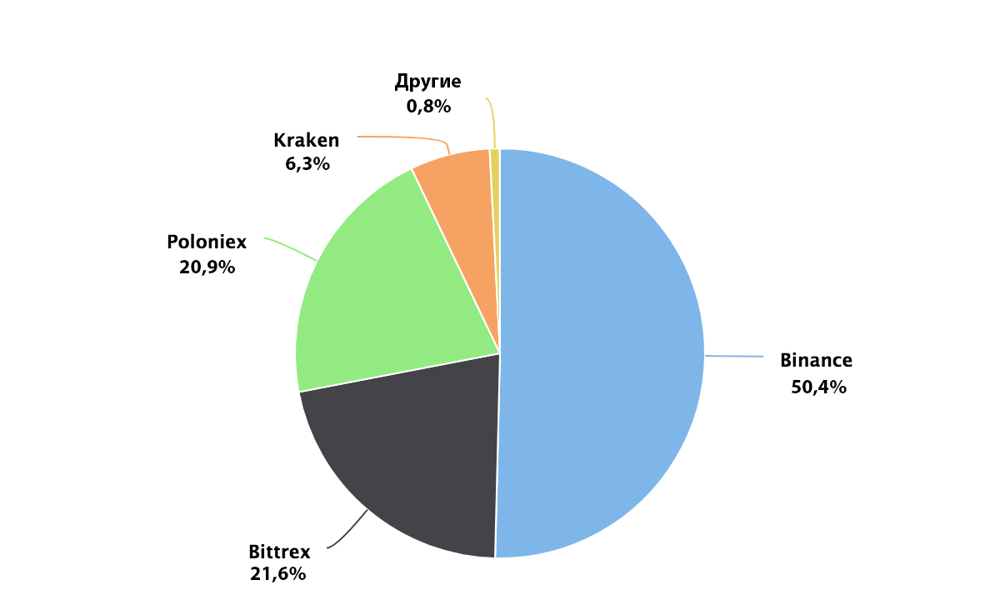

Stellar это децентрализованная платформа для проведения P2P валютных операций: платежей, обмена. Stellar работает в режиме реального времени и ее основным направлением является децентрализованный обмен средств, как криптовалют, так и фиатных денег.
Платформа была создана в 2014 года Джедом МакКалебом и Джойсом Кимом и изначально функционировала на базе протокола Ripple. Позже был разработан собственный протокол, исходный код которого находится в открытом доступе. Работа на новом протоколе была запущена в ноябре 2015 года.
Основной причиной отделения Stellar от Ripple стали обвинения руководства Ripple в том, что платежная система является централизованной и ее руководство заинтересовано исключительно в увеличении собственной прибыли и добивается этого в том числе “раскачкой” курса встроенной валюты системы XRP.
В 2014 году был создан фонд поддержки Stellar (Stellar Development Foundation), являющийся некоммерческим неакционерным фондом. То есть создатели фонда не могут получить выгоды ни от его работы, ни от продажи акций. Первоначальное финансирование фонда в размере $3’000’000 было получено от компании Stripe и было впоследствии погашено 2 млрд. lumen. Также 5% от первоначальной эмиссии токенов торгуется на биржах и используется для операционных расходов, таких как зарплата сотрудников, офисные расходы, образовательные и партнерские программы и т.д. Дополнительными статьями дохода фонда являются ежегодные взносы его участников и благотворительные взносы сторонних компаний или частных лиц. Создание фонда было в первую очередь мотивировано стремлением избежать критики проекта, аналогичной критике Ripple, в его использовании с целью получения дохода руководящих лиц. Мандат Stellar Development Foundation представлен на официальном сайте https://www.stellar.org/about/mandate/.
Нативная криптовалюта платформы - lumen, тикер STR или XLM. Монете соответствует два тикера, так как её первоначальное название stellar, и не все биржи изменили обозначение. Смена названия произошла при запуске в 2015 году собственного протокола Stellar с целью отделить название нативной криптовалюты от названия платформы и некоммерческой организации, под управлением которой функционирует платформа.
Механизмы и принципы эмиссии
При запуске платформы в 2014 году было эмитировано 100 миллиардов токенов (lumen).
Еженедельно протоколом генерируются токены для создания искусственной инфляции величиной 1% в год.
Распределение токенов:
95% пользователям (путем бесплатных раздач)
5% фонду Stellar на операционные расходы
Фонд разработал программу раздачи токенов таким образом, чтобы их распределение было диверсифицировано и выглядело так:
50% частным пользователям, которые хотят использовать lumen
25% некоммерческим организациям для передачи малообеспеченным и социально ущемленным группам населения
20% держателям биткоинов.
Актуальную статистику по распределению токенов можно посмотреть на сайте: https://dashboard.stellar.org/
На 25.12.2017 фонд Stellar осуществил два раунда раздачи токенов держателям биткоинов:
июль-октябрь 2016 года - 19% lumen (19 миллиардов)
27 июня 2017 года - 16% lumen
Распределение токенов основано на снимке блокчейна биткоина, в котором хранятся данные балансов биткоина по всем адресам сети.
Механизмы обеспечения консенсуса
Протокол консенсуса Stellar Consensus Protocol (SCP) работает на базе задачи Византийских генералов. В распределенных системах задача византийских генералов - это задача консенсуса в сети ненадежных вычислителей. Она звучит примерно так: задача взаимодействия нескольких удаленных узлов, которые получили послание из одного управляющего центра. Часть узлов, включая центр, могут быть скомпрометированы, но несмотря на это необходимо принять верное решение.
SCP использует алгоритм Федеративного Византийского соглашения (Federated Byzantine Agreement - FBA), для описания механизма работы которого вводятся понятия кворума и кворум-слайсов. В распределенной системе кворум это набор узлов, достаточный для достижения консенсуса. В Федеративном Византийском соглашении (FBA) вводится понятие кворум-слайсы (qourum slice) - набор узлов, мнения которых достаточно для принятия решения одним конкретным узлом. Основное отличие Федеративного Византийского соглашения (FBA) от классического в том, что каждый отдельный узел выбирает для себя кворум-слайсы, решению которых он доверяет. Узел может выбирать несколько доверительных кворум-слайсов и ожидает от них одобрения транзакции. Эти узлы в свою очередь тоже ожидают одобрения транзакции от своих кворум-слайсов. Таким образом собирается достаточное количество голосов сети и формируется общесистемный консенсус.
Важным параметром работоспособности системы, способности привести к конечному состоянию, является пересечение кворум-слайсов. Протокол является работоспособным только в том случае, если два любых кворум-слайса имеют между собой пересечение. Иллюстрация пересечения приведена ниже. В первом случае группы узлов не имеют пересечения и, соответственно, группы узлов могут прийти к разному решению. Во втором случае соблюдается условие кворумного пересечения и система достигнет общесистемный консенсус.
Каждый узел несет ответственность за то, чтобы сохранять пересечение кворум-слайсов. Основным способом является ответственный выбор узлом консервативных крупных кворум-слайсов, участники которого достаточно важны, чтобы рисковать своей репутацией. Удаление узлов-злоумышленников из кворум-слайса не ведет к потере его целостности. Таким образом, основным параметром конечности достижения консенсуса является установление доверительных связей между выбранными узлом кворум-слайсами.
Однако, не до конца понятны практические принципы выбора доверительных кворум-слайсов: каким конкретно критериям они должны удовлетворять, как пользователю-новичку не ошибиться в выборе, как проводится анализ узлов на недобросовестность и их удаление из кворум-слайсов. Техническое описание SCP на английском языке представлено на официальном сайте Stellar по ссылке: https://www.stellar.org/papers/stellar-consensus-protocol.pdf
Также на официальном сайте приведена статья, в которой описаны общие принципы SCP: https://medium.com/a-stellar-journey/on-worldwide-consensus-359e9eb3e949
Архитектурные преимущества и риски
Для того, чтобы защитить сеть от перегрузки путем создания огромного количества счетов (злоумышленного спама), существует требование, согласно которому на каждом балансе должно постоянно находится не менее 50 монет STR. Есть способ защиты и от «операционного (транзакционного) спама», который выражается в большом количестве транзакций. Каждый раз, когда вы предпринимаете какую-либо денежную операцию, с вашего баланса снимается 0,00001 STR. Эти монеты не взимаются в пользу системы, они просто сжигаются.
Система работы пиринговая, то есть, не зависит от действий других участников. Потому у каждого может быть свой алгоритм работы, не зависящий от действия других участников. Но в едином реестре записываются транзакции, проводимые в сети с каждого отдельного аккаунта. Дубликат этого журнала Stellar есть у каждого из участников сети, где запущено программное обеспечение платформы. Технология одноранговых узлов очень эффективна, разработчикам удалось решить задачу обеспечения работоспособности системы даже в том случае, если больше половины узлов выйдет из строя.
Лицензирование и юридические аспекты
Все программное обеспечение проекта лицензируется по лицензии Apache версии 2.0. Эта лицензия разрешает коммерческое использование, модификацию и/или распространение.
Stellar - это программное обеспечение - программная прослойка между финансовыми продуктами и учреждениями. Таким образом, Stellar не является лицензированным финансовым учреждением. Если организация-интегратор планирует принимать депозиты и выдавать кредиты в сети Stellar, то это уже ей нужно будет предоставлять лицензию поставщикам финансовых услуг (MSP) или оператору мобильной связи (MMO).
Интеграторы сами отвечают за выполнение всех требований к проверке подлинности KYC / AML. Тем не менее, Stellar выпустил инструменты, помогающие финансовым учреждениям с их интеграцией: compliance protocol.
Производительность и масштабируемость
В зависимости от оборудования и конфигурации сети производительность составляет около 1000 операций в секунду.
Чтобы получить подтверждение операции, надо подождать не более 5 секунд, хотя в большинстве случаев для этого понадобится не больше 3 секунд.
Встроенные механизмы и функции
Платформа поддерживает мультиподпись и смарт-контракты.
Распределенный реестр (гроссбух, ledger)
В распределенном реестре Stellar хранится список всех балансов и транзакций, принадлежащих каждой учетной записи в сети. Полная копия глобального гроссбуха Stellar хранится на каждом сервере, который обеспечивает работу ПО Stellar. Запускать сервер Stellar может любой пользователь. Эти серверы формируют децентрализованную сеть Stellar, они синхронизируются и подтверждают данные реестра при помощи консенсуса, который происходит каждые 3-5 секунд.
Шлюзы (якоря, anchors)
Шлюзы - это участники сети, которым люди доверяют свои депозиты и доверяют выдавать в сети Stellar кредиты, согласно этим депозитам. Все денежные транзакции осуществляются в форме кредитов, выданных шлюзами (за исключением внутренней валюты).
Участник сам выбирает шлюз, которому доверяет, при этом доверие к другим участникам системы не требуется.
Шлюзы выполняют следующие функции:
Принимают депозиты участников сети и выдают соответствующие кредиты на адрес учетной записи участника в реестре Stellar.
Позволяют осуществлять вывод средств посредством выданного кредита.
Алгоритм следующий:
- Внесение денежного депозита с банковского счета.
- Система выдаёт кредит на те средства, которые оказались на депозитном счету.
- Пользователь может отправлять кредит любому пользователю, у которого есть аккаунт в системе.
- Получатель кредита может конвертировать его в реальную валюту, переместив деньги на банковский счёт.
Децентрализованная биржа
Децентрализованная биржа, отлично подходит для валют, которые не имеют собственного прямого рынка. Она значительно упрощает многоступенчатые схемы перевода средств на базе блокчейна.
Реестр Stellar способен хранить предложения, сделанные людьми в целях продажи или покупки валюты. Предложения – это публичные обязательства по обмену одного кредита на другой по заранее установленной ставке. Все предложения формируют книгу заказов, которая существует для каждой пары валюта/эмитент. Кто угодно в системе может создать новое предложение, принять существующее или отменить предложение, созданное им ранее.
Мультивалютные транзакции
Средства в системе Stellar можно передавать не только кому угодно, но и в какой угодно валюте. Неважно, в какой именно денежной единице средства поступили на счёт, пользователь выбирает пару, ориентируясь на ту валюту, держателем которой является, а вторая выбирается через предложения, которые есть на бирже. То есть, если нужно отправить евро, используя баланс BTC, Stellar автоматически конвертирует BTC в EUR, используя максимально выгодный на тот момент курс в предложениях. В процессе осуществления транзакции, может произойти целая серия обменов одной валюты на другую. В конченом счете, оба пользователя получат ту валюту, которую хотели и оба предложения об обмене будут исполнены.
Возможности интеграции
Одним из преимуществ проекта является совместимость платформы Stellar Lumens с другими продуктами финансового рынка.
С технической точки зрения, открытый код позволяет создавать собственные клиенты и плагины на базе Stellar для интеграции с платформой. На официальном сайте для этого есть все необходимые для этого инструменты, документация и подробные руководства.
Есть уже работающие примеры таких интеграций с компаниями: Deloitte, Tempo и Parkway.
Кошелек Stellar Lumens
Скачать кошелек Stellar Lumens или перейти по ссылке на браузерную версию можно тут: https://www.stellar.org/lumens/wallets/
Кошелек с открытым исходным кодом можно установить, скачав также с GitHub.
Помимо “родного” кошелька существует еще около 14 альтернативных вариантов кошельков, на которых можно хранить токены проекта: SIKA, LobStr, Papaya и многие другие. Из них - 7 браузерных web-версий, некоторые имеют мобильную версию для смартфона.
Фреймворк разработчика
Программное обеспечение, предоставляемое Stellar:
Stellar Core - собственно платформа, ядро.
Horizon - это клиентский сервер API для экосистемы Stellar. Он действует как интерфейс между Stellar Core и приложениями, которые хотят получить доступ к сети Stellar.
Автономный Federation server, предназначенный для включения в существующую инфраструктуру. Он может быть настроен на извлечение необходимых данных из существующей базы данных SQL. Доступен для Linux, Windows и Mac.
Сервер Stellar's Bridge предоставляет простой интерфейс для сети Stellar. Хранит информацию о ключах и данные учетной записи.
Archivist - небольшой независимый инструмент для работы с архивами ядра. Доступен для Linux, Windows и Mac.
Разработчики Stellar предоставляют и дополнительные инструменты и приложения (https://www.stellar.org/developers/tools/): “песочница” для изучения API Stellar; клиент для просмотра учетных записей; приложение, показывающее текущее состояние рабочих и тестовых сетей; SMS-клиент.
Взаимодействовать с Horizon можно напрямую через cURL или веб-браузер. Разработчики Stellar также предоставляют SDK для клиентов, которые будут использоваться для взаимодействия с Horizon: https://www.stellar.org/developers/reference/.
Доступны библиотеки, разработанные Stellar, для языков: JavaScript, Java, Go. Разработанные коммьюнити: Ruby, Python, C# .NET Core 2.0, C#, C++.
Документация и поддержка
Для пользователей есть ресурс Knowledge Center, где размещены инструкции по использованию кошелька, десктоп клиента, отправке токенов на основные биржи, FAQ, статьи о безопасности, описание возможных проблем и их решение и многое другое.
Адрес ресурса: https://stellarorg.zendesk.com/hc/en-us
Календарь событий
август 2014 - запуск проекта
02.12.14 - презентация Stellar на The Future of Money and Technology Summit в Сан-Франциско.
08.09.17 - объявлено о запуске инициативы Stellar Partnership Grant Program - выдача грантов проектам, направленных на развитие Stellar.
16.10.17 - объявлено, что IBM собирается использовать Stellar для сферы трансграничных платежей. На данный момент уже работает 12 валютных коридоров на островах Тихого океана, Австралии, Новой Зеландии и Великобритании. В дальнейшем география проекта будет значительно расширена. Проект поддерживается крупными компаниями, такими как National Australia Bank, TD Bank, Wizdraw (HK) of WorldCom Finance и созданная ООН и Swift организация Advancement of Pacific Financial Infrastructure for Inclusion (APFII), подразделение полинезийской платежной системы KlickEx. Новая платежная системы уже встроена в Financial Transaction Manager от IBM.
Распространение
Распространение монеты по биржам:
Динамика капитализации
Максимум капитализации был достигнут 3.01.18 и составил более $15.6 млрд. На 9.01.18 капитализация составляет более $11.8 млрд.
Динамика капитализации за последние 90 дней:
Динамика цены токенов
В начале мая токен пережил сильный памп, когда его стоимость выросла в десятки раз. Большая часть монет торговалась на бирже Poloniex, и на пике стоимости монеты на эту биржу была осуществлена хакерская атака. После этого курс стремительно упал.
В декабре 2017 начинается стремительный рост монеты, максимум за время ее существования был достигнут 3.01.18 и составил $0.8756. На 9 января 2018 стоимость монеты составляет $0.6627.
Динамика цены токена за последние 90 дней:
Анализ Road Map и White Paper
Road Map у проекта нет, но есть ежемесячные отчеты с новостями о проекте, найти их можно в блоге на официальном сайте: https://www.stellar.org/blog/.
Белой бумаги, как отдельного документа с таким названием, у проекта нет, вся техническая информация, которая обычно в этот документ включается, находится на официальном сайте в разделе для разработчиков: https://www.stellar.org/developers/guides/. Здесь собрана вся необходимая техническая информация, касающаяся любых аспектов Stellar.
Есть техническая документация, описывающая протокол консенсуса (Stellar Consensus Protocol - SCP), которую сами члены команды называют White Paper: https://www.stellar.org/papers/stellar-consensus-protocol.pdf
В документе приводится техническое описание алгоритма, но не хватает практических рекомендаций участникам сети, например, по выбору доверительных кворум-слайсов, участвующих в достижении консенсуса. Рекомендации ограничиваются общими словами, но туториала, как не ошибиться, и доступное объяснение, почему необходимое условие пересечения кворум-слайсов будет выполняться, отсутствует.
Команда
Jed McCaleb - соучредитель, возглавляет разработку Stellar, продолжая разработку open-source технологии, которую он создавал в Ripple. Создатель eDonkey2000.
Joyce Kim - исполнительный директор Stellar Foundation, в прошлом адвокат и венчурный инвестор с фокусом на общественные проекты.
David Mazières - профессор, соруководит разработкой, руководитель Stanford’s Secure Computer Systems group, создатель SFS и bcrypt.
Помимо вышеперечисленных, в состав команды входит еще 13 человек. Все имеют богатый опыт и являются профессионалами в своих областях. Подробнее о каждом члене команды можно прочитать на официальном сайте проекта: https://www.stellar.org/about/.
Среди 8 советников проекта можно особо выделить: Dan Kaminsky - американский ученый, специалист по компьютерной безопасности, всемирно известный хакер; Matt Mullenweg - основатель WordPress.com, очень активный ангел-инвестор, названный Форбс самым влиятельным ангелом-инвестором в AngelList; Naval Ravikant - CEO и со-основатель AngelList. С остальными советниками можно ознакомиться по указанной выше ссылке.
Партнеры
Проект Stellar заключил партнерство с компаниями сразу в четырёх странах, которым стали доступными дешевые финансовые операции, в том числе денежные переводы:
Поддержка сообщества в социальных сетях составляет по оценке coingecko.com на 09.01.18 - 65%.
Reddit - 46981 подписчиков;
Twitter - 139233 последователей;
Facebook - 12733 лайков.
Интерес к проекту начал расти с середины мая. А за последний месяц он вырос практически в 2 раза.
Динамика популярности запроса “Stellar Lumens” согласно данным Google.Trends:

Первые полгода своего существования проект не радовал сообщество своими новостями. Между запуском проекта и его первой презентацией прошло 4 месяца.
Deloitte - одна из крупнейших финансовых консалтинговых компаний в мире - использует прототип на базе Stellar для работы с банковскими клиентами за пределами Северной Америки, который снизил транзакционные издержки на 40% и уменьшил скорость выполнения транзакций до 5 секунд.
Tempo использует сеть Stellar для снижения стоимости и повышения прозрачности денежных переводов. Компания имеет сеть из 190 000 точек в 120 странах, благодаря которой клиенты могут совершать трансграничные платежи для оплаты коммунальных услуг, телефона, медицинской страховки и т.д.
Будучи лицензированным оператором мобильной связи, Parkway использует сеть Stellar для подключения 5 крупнейших телекоммуникационных компаний Нигерии, позволяя клиентам разных MM-сервисов отправлять деньги друг другу. Parkway разрабатывает финансовые технологии для 3000 клиентов по всей Африке, включая Ecobank, Wema Bank и Diamond Bank. Их комплексные финансовые решения используются в 30 странах в таких секторах, как здравоохранение, образование и энергетика.
Главный конкурент Stellar Lumens - Ripple. Stellar основана на том же исходном коде и в первое время своего существования считалась ответвлением Ripple. Однако, со временем приобрела полную самостоятельность.
Ripple подвергалась и подвергается до сих пор критике со стороны экспертов, считающих ее полностью централизованной платформой, которая контролируется коммерческой структурой Ripple Labs. К тому же, долгое время код Ripple был закрытым, в отличие от Stellar.
За декабрь и начало января токен Stellar совершил большой прорыв и уверенно взял курс на своего главного конкурента.
Токены XLM могут найти в современном мире свое применение в качестве промежуточной валюты для обеспечения обмена между различными криптовалютами и даже фиатом.
Блокчейн планируется разделить на публичный и приватный.
Stellar была поддержана крупными компаниями и банками, что повышает к ней доверие, увеличивает популярность и благоприятно влияет на курс токена. Совместная с IBM система трансграничных платежей использует токены XLM в качестве связующего звена между фиатными валютами. С развитием этого крупного проекта спрос на токены XLM должен увеличиваться, поэтому стоит следить за новостями. Статистика декабря 2017 подтверждает предпосылки к росту курса.
Преимущества:
Работа с любой валютой внутри платформы.
Автоматизация процедуры обмена токенов.
Возможность создания своих клиентов и плагинов на базе Stellar.
Компетентная и опытная команда.
Поддержка крупных и всемирно известных компаний.
Недостатки:
Необходимость иметь минимальный баланс на счету для использования Stellar. Сумма незначительная, но она по сути заморожена до тех пор, пока владелец счета пользуется услугами Stellar.
Транзакции не бесплатны, комиссия за каждую транзакцию составляет 0,00001 XLM. Это ограничивает использование платформы для проведения микроплатежей: хотя технически поддержка микроплатежей в системе есть, но их использование может быть невыгодным.
Все описанные выше недостатки незначительны и они существуют в пользу увеличения надежности системы.
Официальный сайт:
https://www.stellar.org/
Facebook:
https://www.facebook.com/stellarfoundation
Twitter:
https://twitter.com/stellarorg
Github:
https://github.com/stellar
Reddit:
https://www.reddit.com/r/stellar